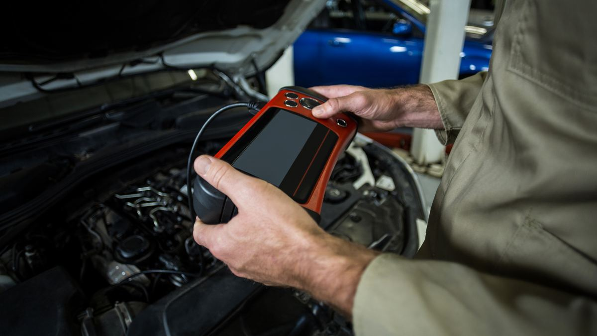
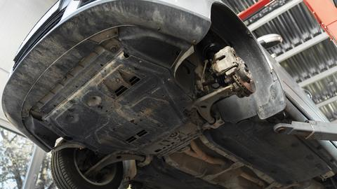
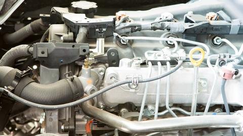

Usługa · Kielce i okolice
Filtr DPF w Kielcach – diagnostyka, regeneracja i czyszczenie (bez wycinania)
Zaświeciła się kontrolka DPF, auto straciło moc albo przeszło w tryb awaryjny? Diagnostyka DPF to pierwszy krok: sprawdzamy, ile w filtrze jest sadzy i popiołu, czy czujniki podają prawdziwe wartości i co zapycha filtr. Potem wykonujemy wymuszoną regenerację serwisową albo czyszczenie. Pomagamy kierowcom w Kielcach i okolicy – filtrów nie wycinamy.

W czym pomożemy
- Odczyt błędów i parametrów filtra: zapełnienie sadzą i popiołem, różnica ciśnień, temperatury spalin
- Sprawdzenie czujnika różnicy ciśnień, czujników temperatury i ich przewodów
- Wymuszona regeneracja serwisowa testerem diagnostycznym
- Czyszczenie filtra DPF/FAP, gdy regeneracja nie wystarcza
- Wskazanie przyczyny zapychania: wtryski, zawór EGR, turbosprężarka, termostat
- Sprawdzenie filtra przed badaniem technicznym albo przed zakupem używanego diesla
Co przygotować
- Marka, model, rocznik, silnik i przebieg auta
- Jakie kontrolki i komunikaty widzisz – najlepiej zdjęcie zegarów
- Jak zwykle jeździsz: krótkie odcinki po mieście czy dłuższe trasy
- Co było już robione przy filtrze, wtryskach lub zaworze EGR
Nie wycinamy filtrów DPF i nie wyłączamy ich w sterowniku – auto bez filtra nie spełnia warunków technicznych. Diagnozujemy, regenerujemy i czyścimy.
Jak to wygląda
- 1
Opis objawów
Mówisz, co pokazuje auto, od kiedy i jak jeździsz na co dzień.
- 2
Diagnostyka
Odczytujemy błędy i parametry filtra, sprawdzamy czujniki i stan oleju.
- 3
Regeneracja lub czyszczenie
Proponujemy zabieg, który wynika z diagnostyki, i podajemy cenę, zanim zaczniemy.
- 4
Kontrola i przyczyna
Sprawdzamy parametry po zabiegu i mówimy, co zapychało filtr i co warto naprawić.
Diagnostyka DPF – od czego zaczynamy
Kontrolka filtra cząstek stałych, wyraźny spadek mocy, częste regeneracje, wyższe spalanie albo olej, którego na bagnecie przybywa zamiast ubywać – to typowe sygnały, że z filtrem DPF dzieje się coś złego. Diagnostyka DPF pozwala ustalić, co dokładnie: odczytujemy błędy zapisane w sterowniku silnika, zapełnienie filtra sadzą i popiołem, różnicę ciśnień przed filtrem i za nim, temperatury spalin oraz informacje o ostatnich regeneracjach.
W mieście filtr ma trudne życie. Krótkie przejazdy przez Kielce, korki w godzinach szczytu i zimowe poranki sprawiają, że spaliny często nie nagrzewają się na tyle, by sadza mogła się wypalić. Czasem wystarczy dłuższa, równa jazda drogą ekspresową – według instrukcji auta i w granicach ograniczeń prędkości. Jeśli kontrolka dopiero się pojawiła, przeczytaj najpierw tekst świeci się kontrolka DPF. Gdy jazda nie pomaga albo auto weszło w tryb awaryjny, nie próbuj wypalać filtra na siłę – zadzwoń.
Wymuszona regeneracja DPF czy czyszczenie filtra
Wymuszoną regenerację serwisową uruchamiamy testerem diagnostycznym wtedy, gdy filtr jest sprawny, a zalega w nim głównie sadza. Zanim ją włączymy, oceniamy olej i wiarygodność odczytów, bo mocno przepełniony filtr mógłby się podczas wypalania przegrzać i popękać. Czyszczenie filtra ma sens, gdy kanaliki wypełnił popiół, na który wypalanie nie działa, albo gdy po regeneracji kłopoty szybko wracają.
O wyborze zabiegu decyduje wynik diagnostyki. Przy wycenie mówimy, na czym będzie polegać czyszczenie w Twoim aucie i jak długo samochód nie będzie mógł jeździć. Różnice między zabiegami opisujemy szerzej w artykule regeneracja czy czyszczenie DPF.
Dlaczego filtr się zapycha – szukamy przyczyny
Zapchany filtr jest często skutkiem innej usterki. Nadmiar sadzy mogą produkować cieknące wtryskiwacze, niesprawny zawór EGR, nieszczelny dolot albo zużyta turbosprężarka. Uszkodzony termostat sprawia, że silnik za wolno się nagrzewa, a olej niezgodny z normą producenta szybciej zapełnia filtr popiołem. Zdarza się też, że filtr jest w dobrym stanie, a sterownik dostaje fałszywe dane z czujnika różnicy ciśnień albo z jego nieszczelnych przewodów.
Po zabiegu sprawdzamy parametry filtra i mówimy, co według diagnostyki doprowadziło do zapchania i co warto naprawić. Jeśli przyczyna zostanie, filtr po regeneracji czy czyszczeniu wkrótce wróci do punktu wyjścia. Nawyki, które pomagają mu wytrzymać dłużej, zebraliśmy w poradniku filtr DPF – jak dbać. Gdy podejrzenie pada na elektronikę silnika, zajrzyj też na stronę sterowniki i immobilizery.
Dlaczego nie wycinamy DPF
Wycięcie filtra bywa reklamowane jako tani koniec kłopotów. My go nie wykonujemy – podobnie jak wyłączania filtra w oprogramowaniu sterownika. Prawo o ruchu drogowym wymaga, by urządzenia chroniące środowisko były utrzymane w należytym stanie i działały sprawnie, a auto bez fabrycznego filtra tych warunków nie spełnia. Przy kontroli drogowej policjant może zatrzymać dowód rejestracyjny pojazdu, który narusza wymagania ochrony środowiska, a na badaniu technicznym auto bez filtra nie powinno uzyskać pozytywnego wyniku.
Unia Europejska pracuje też nad dokładniejszymi badaniami spalin diesli, które mają lepiej wychwytywać auta z usuniętym filtrem. Przepisy, przebieg badania technicznego i wskazówki dla kupujących używane auto opisujemy w artykule wycięty DPF a przegląd. Jeśli filtr sprawia kłopoty, zadzwoń – sprawdzimy, czy wystarczy regeneracja, czy potrzebne jest czyszczenie.
Pytania i odpowiedzi
Świeci się kontrolka DPF. Mogę jechać dalej?
Czy wymuszona regeneracja zawsze wystarczy?
Czy możecie wyciąć albo wyłączyć filtr DPF?
Czy kontrolka DPF może zapalić się przez czujnik, a nie przez filtr?
Czy sprawdzicie filtr przed przeglądem albo przed zakupem auta?
Ile kosztuje diagnostyka lub czyszczenie DPF?
Działamy w Kielcach i okolicach
Przydatne porady
 Filtr DPF
Filtr DPFFiltr DPF – jak dbać, kiedy czyścić i czego unikać
Jak dbać o filtr DPF, żeby latami działał bez kłopotów? Wyjaśniamy, co mu szkodzi, jakie nawyki pomagają, jaki olej wybrać i kiedy sama jazda w trasie już nie wystarczy.
Czytaj · 4 min Filtr DPF
Filtr DPFŚwieci się kontrolka DPF – co robić?
Zapaliła się kontrolka DPF i nie wiesz, czy możesz jechać dalej? Wyjaśniamy, co oznacza, kiedy wystarczy jazda w trasie, a kiedy lepiej od razu umówić diagnostykę.
Czytaj · 4 min
Filtr DPFRegeneracja czy czyszczenie DPF – czym się różnią?
Czyszczenie DPF i regeneracja filtra to nie to samo. Wyjaśniamy, co usuwa każdy z tych zabiegów, kiedy który ma sens i dlaczego bez znalezienia przyczyny oba pomogą tylko na chwilę.
Czytaj · 4 min
Filtr DPFCzujnik różnicy ciśnień DPF – objawy awarii i co sprawdzić
Kontrolka DPF, tryb awaryjny albo regeneracje bez końca? Za takimi objawami często stoi czujnik różnicy ciśnień DPF lub jego przewody – wyjaśniamy, jak działa, jak rozpoznać awarię i czego nie robić.
Czytaj · 4 min Filtr DPFWycięty DPF a przegląd i przepisy – dlaczego tego nie robimy
Wycięty DPF to częsty temat przy zakupie używanego diesla i przed przeglądem. Wyjaśniamy, co mówią przepisy, co może się stać przy kontroli drogowej i na badaniu technicznym, jakie zmiany w badaniach zapowiada Unia Europejska i dlaczego zajmujemy się wyłącznie diagnostyką, regeneracją i czyszczeniem filtrów.
Czytaj · 5 minPotrzebujesz pomocy teraz?
Zadzwoń – powiemy, ile to potrwa i ile będzie kosztować, zanim wyjedziemy.